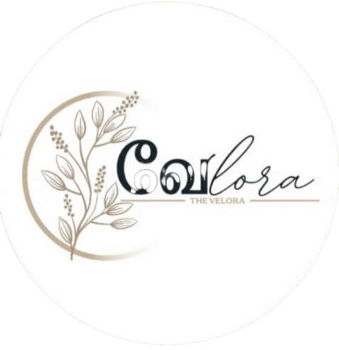

Not a gallery of screenshots — the problem each client came to us with, what we built, and what changed after launch.
we actually build a mockup for jawa
TrueSynk designed and built a custom site end to end, from structure to launch.
A live, working website ready to represent Jawa online.
we true synk build a ultimate scroll based website for black myth wukong
TrueSynk designed and built a custom site end to end, from structure to launch.
A live, working website ready to represent Wukong online.

Web DevelopmentSpotlight Velora's creative journey. We built a streamlined portfolio experience where clients can explore active and past projects, then instantly connect with the team via social DMs to start their own
TrueSynk designed and built a custom site end to end, from structure to launch.
A live, working website ready to represent theவேlora online.